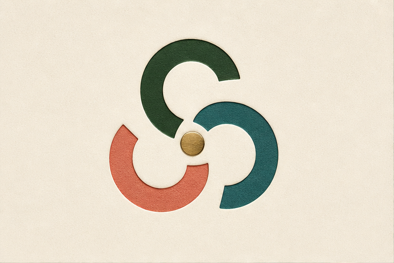
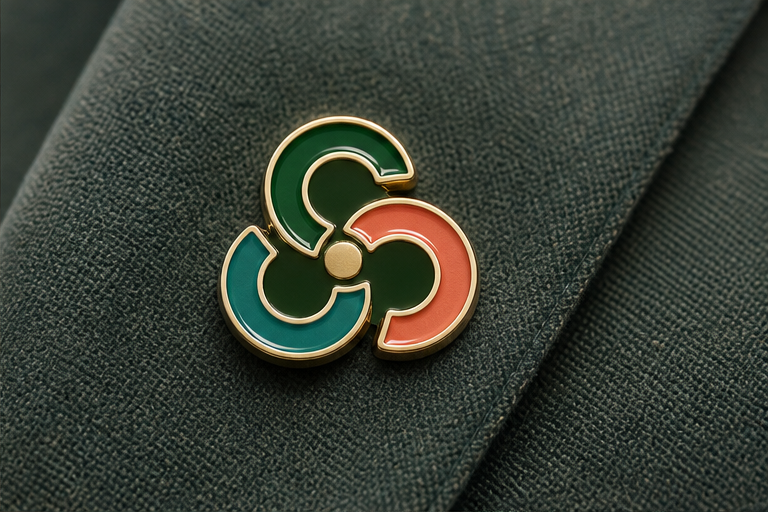
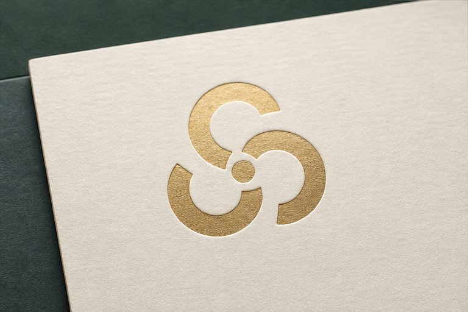
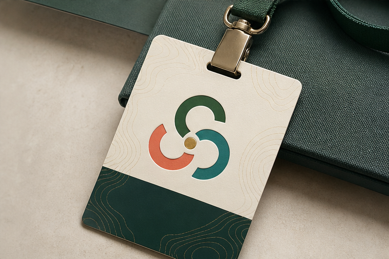

D2 Approved Logo Route
D2 is the only approved route from the comparison board. Everything here protects that route.
No new C proportions, no all-Cs-aim-inward logic, no obvious leaf, no generic seal, no dark tech look.
One master C component duplicated three times with exact rotations and fixed spacing.
The metric graph is a construction guide only. The approved source image remains the lead reference.
Approved Source
This is the protected D2 source board. It should not be overwritten or used as a dumping ground for new exploration.
D2 Lock
The approved route is a premium membership mark with three C modules and a brass center dot.
- Three equal C modules, not three different letters.
- One active C endpoint at a time relates to the center dot.
- The C edge should resolve against the dot's circular edge.
- Center dot reads as catalyst and shared access point.
- Best physical expression is enamel pin plus credential.
- Final logo must work flat before material effects are added.
- Alternative concepts must live in a separate exploration lane.
Exact D2 Mockup Extracts

01. Isolated mark. This is the flat read to protect during construction.

02. Enamel pin. This is the strongest premium member object.

03. Gold stamp. This proves the route can become ceremonial and official.

04. Credential. This is the badge and access use case to preserve.
Metric Graph
Define one C as the master component. Every C instance must be duplicated from it.
C = same path, same radius, same stroke
Place the three C modules around the center at equal 120 degree intervals.
theta = 90, 210, 330
The dot should be visually smaller than the C stroke, but large enough to read on a pin.
dot diameter = 1.25S to 1.4S
The open space between C terminals and the dot must stay intentional, not accidental.
center gap = 0.55S to 0.75S
Use one terminal treatment across all Cs. Do not allow one C to have a different cut angle.
terminal angle = matched across all instances
If negative space hints at a leaf, it must be secondary. The first read stays CCC access.
leaf cue = optional, never first read